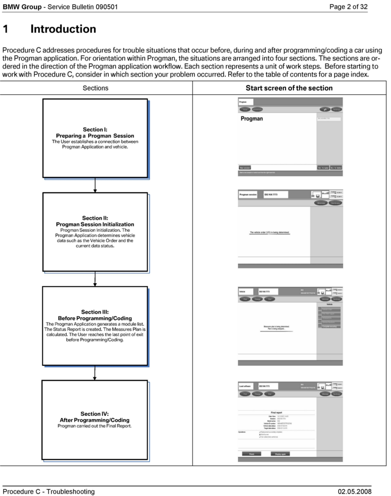

Operation CHARM
: Car repair manuals for everyone.
Home
>>
BMW
>>
2007
>>
X3 3.0si (E83) L6-3.0L (N52K)
>>
Repair and Diagnosis
>>
Powertrain Management
>>
PROM - Programmable Read Only Memory
>>
Technical Service Bulletins
>>
All Technical Service Bulletins
>>
Progman(R) - Programming/Coding/Individualization
>>
Procedure_C_Troubleshooting
>>
Introduction
Introduction
